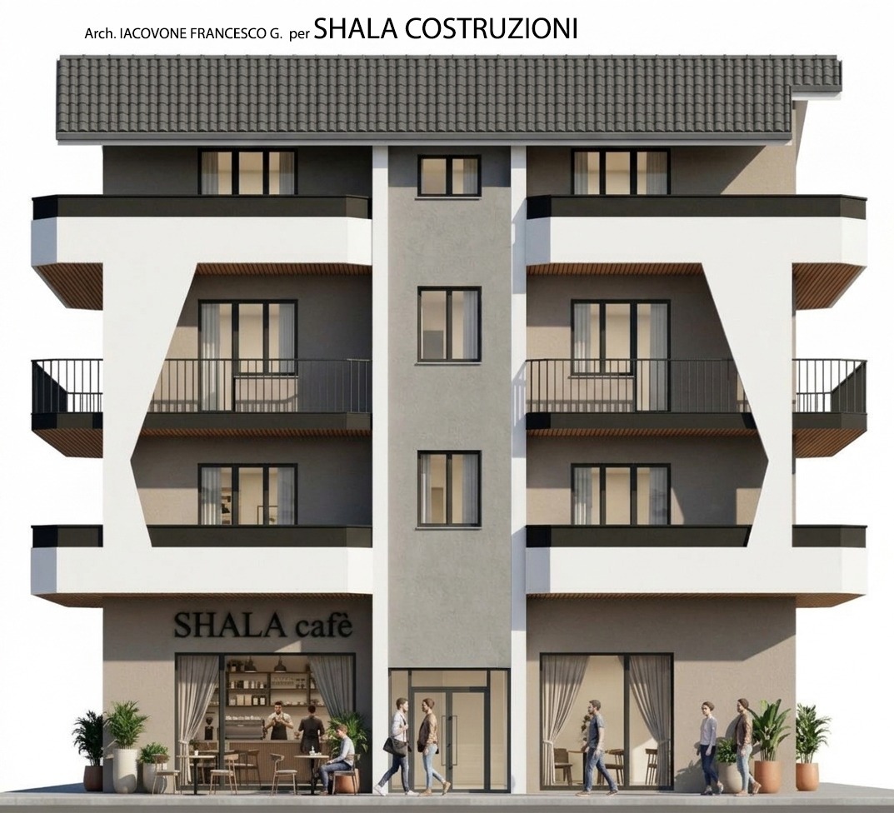
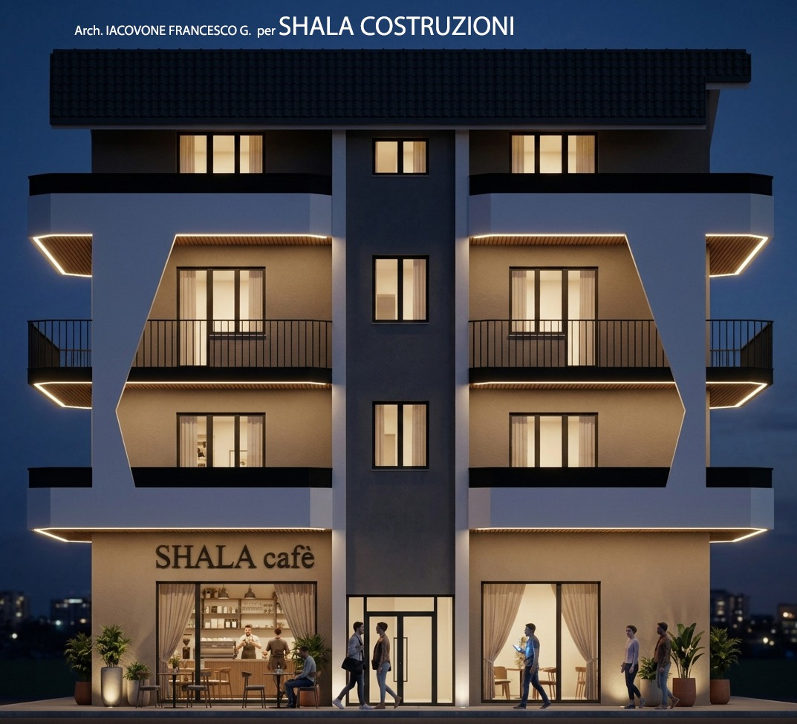
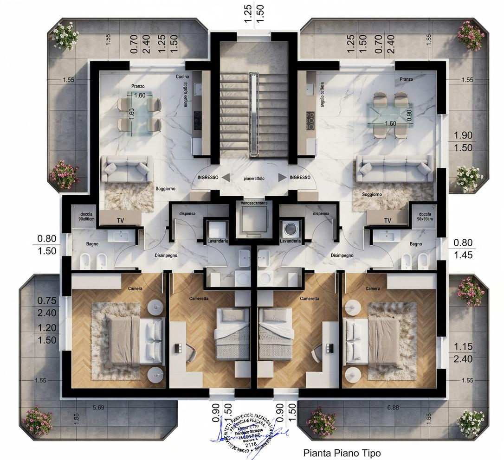
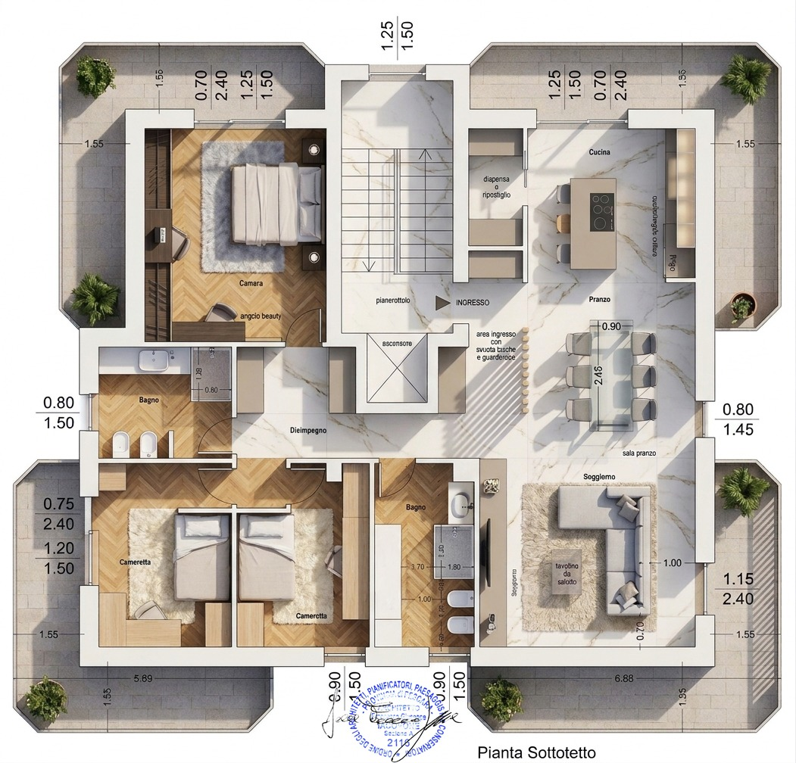

Uno spazio per la tua attività.
La soluzione commerciale valorizza il rapporto con la strada, le vetrine e la presenza sul fronte della palazzina.
Architettura contemporanea, terrazzi e spazi da immaginare intorno a te.
Via XX Settembre 52 · Manoppello Scalo


Tre livelli residenziali e un piano strada: un progetto che mette in relazione la casa, gli spazi esterni e la vita del quartiere.
Due abitazioni indipendenti oppure una residenza più ampia: le tavole illustrano due diverse possibilità.

La pianta del piano tipo mostra due appartamenti speculari, ciascuno con soggiorno e cucina, due camere e spazi di servizio.
Configurazioni indicative, da definire con il progettista.

La tavola del sottotetto propone un’unica abitazione: una zona giorno aperta, una cucina con isola e ambienti dedicati alla vita di famiglia.
Tavola denominata “Pianta Sottotetto”. La soluzione per ciascun livello è da definire con il progettista.
Locale commerciale oppure soluzione residenziale, secondo il progetto da definire.
La soluzione commerciale valorizza il rapporto con la strada, le vetrine e la presenza sul fronte della palazzina.
Una possibile alternativa residenziale: due abitazioni più raccolte oppure un’unica unità ampia, da studiare in base alle esigenze.
La destinazione d’uso e le eventuali suddivisioni sono ipotesi da verificare e sviluppare con il progettista. Il locale e l’insegna presenti nel render illustrano uno scenario di progetto.
Uno sguardo alla palazzina, ai volumi e al suo rapporto con la strada.
Film di concept. I nuovi rendering e le planimetrie presentano l’evoluzione più recente del progetto.